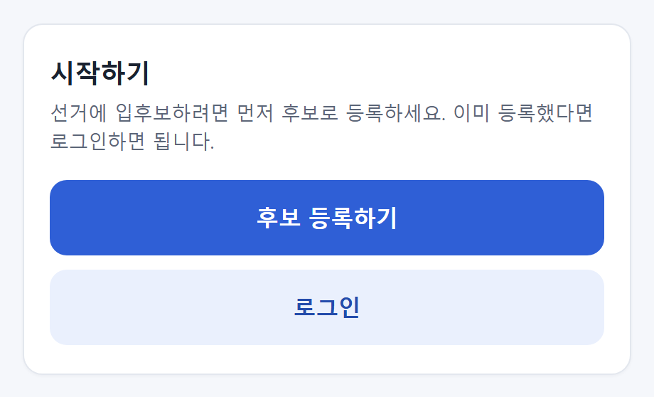
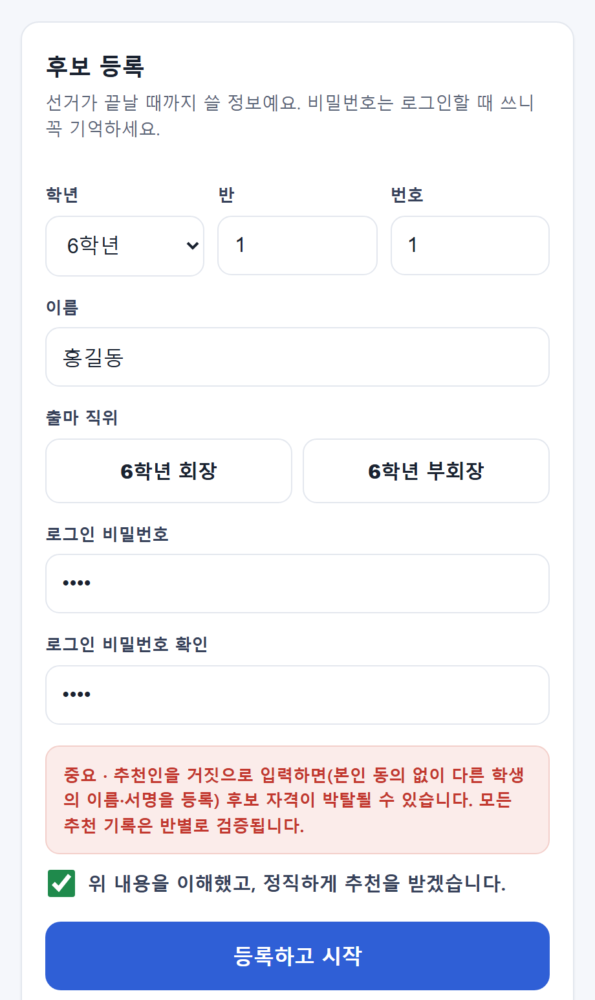
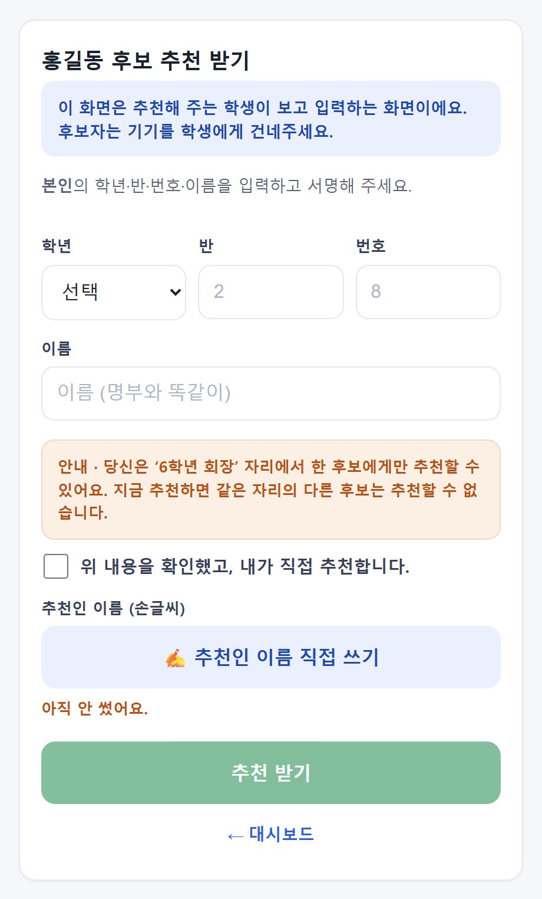
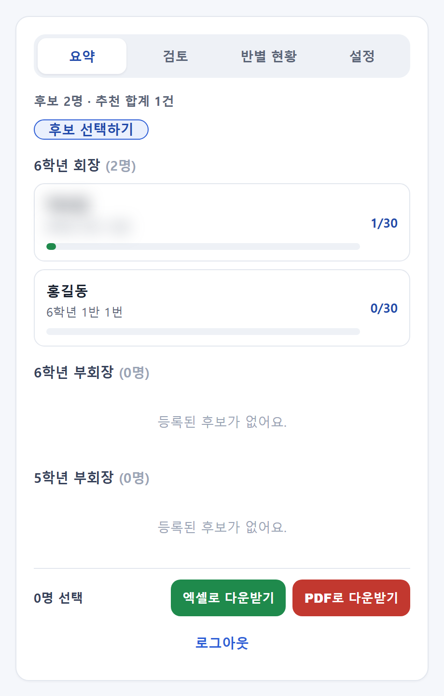
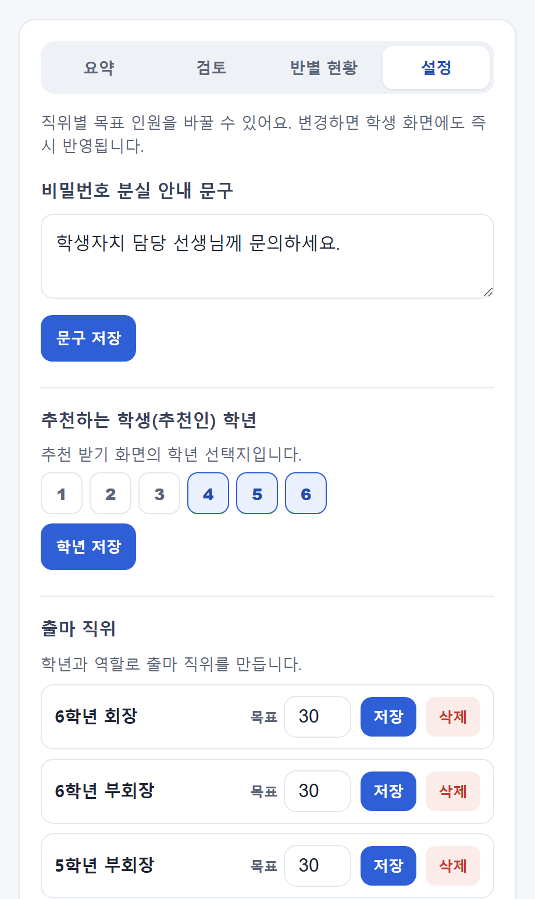

전교임원선거 추천인 관리 시스템

전교임원선거철, 저만 그런가요? 후보마다 추천인 명부를 종이로 받아서, 밤에 앉아 이름을 하나하나 세고 있었어요. 심지어 "이 서명, 본인이 직접 쓴 게 맞나?"까지 확인하려니 끝이 없더라고요. 😮💨
그래서 또 만들었습니다… 누가 말려요 😅 전교임원선거 추천인 관리 시스템이에요.
종이 명부 대신, 링크 하나로 시작
시작 화면은 딱 두 갈래예요. 후보로 처음 왔으면 [후보 등록하기], 이미 등록했으면 [로그인]. 학생에게 종이 한 장 안 돌려도 됩니다.
후보가 스스로 등록해요
후보 등록 화면입니다. 학년·반·번호·이름·출마 직위에 로그인 비밀번호까지 후보가 직접 입력해요. 아래엔 "거짓으로 추천인을 넣으면 후보 자격이 박탈될 수 있고, 모든 추천 기록은 반별로 검증된다"는 안내와 정직 서약 체크가 있어요. 공정성을 처음부터 못 박아두는 거죠.
실제로 6학년 1반 홍길동이라는 예시 후보를 하나 넣어봤어요. 학년을 고르면 그 학년의 출마 직위(회장·부회장)가 딱 뜨고, 비밀번호까지 정하면 끝. 종이 명부 없이 후보가 스스로 시작합니다.

등록하면 바로 ‘추천 받는 화면’
등록·로그인하면 후보 대시보드가 열리고, [추천 받기] 버튼 하나면 추천 화면으로 넘어가요. 여기서 후보는 기기를 추천해 줄 학생에게 그냥 건네주면 됩니다. 학생이 본인 학년·반·번호·이름을 입력하고 손글씨로 서명하면 그 자리에서 추천인 한 명이 등록돼요. "같은 자리에서 한 후보에게만 추천할 수 있다"는 안내도 화면에 딱 떠서, 종이로 돌릴 때 늘 헷갈리던 중복 추천을 앱이 막아줍니다.

교사는 손으로 안 세요 — 자동 집계 대시보드
관리자(교사) 비밀번호로 들어가면 후보별 추천 현황이 한 화면에 쌓입니다. 직위별로 후보가 묶여 나오고, 각 후보마다 목표 대비 진행률 막대가 실시간으로 채워져요. 아래엔 엑셀·PDF 다운로드 버튼이 있어서, 결재·보관용 자료를 손집계 없이 그대로 뽑을 수 있고요. 밤에 앉아 이름 세던 그 노동이 통째로 사라지는 거죠.
이 대시보드엔 실제 학생 이름이 섞여 있어서, 예시 후보(홍길동) 말고 실명은 흐리게 처리했어요. 개인정보라서요 😅

우리 학교에 맞게, 설정도 손쉽게
설정 탭에선 직위별 목표 인원, 추천하는 학생의 학년 범위, 출마 직위(6학년 회장·부회장 등)를 학교 상황에 맞게 만들고 바꿀 수 있어요. "한 학생이 몇 명까지 추천할 수 있나" 같은 규칙도 골라서 정할 수 있고요. 바꾸면 학생 화면에 바로 반영됩니다.

손 덜 가는 선거 관리
손집계에 쓰던 밤 시간, 이제 통째로 아끼세요. 세고 검증하는 건 앱한테 맡기고, 쌤은 손 놓으시라고요. 🐈
써보러 가기 →선거철에 열어 보세요. 대시보드에 보이던 실제 학생 이름은 개인정보라 흐리게 처리했어요.
만드는 재미로 사는 초등쌤, 박덕구 🐈